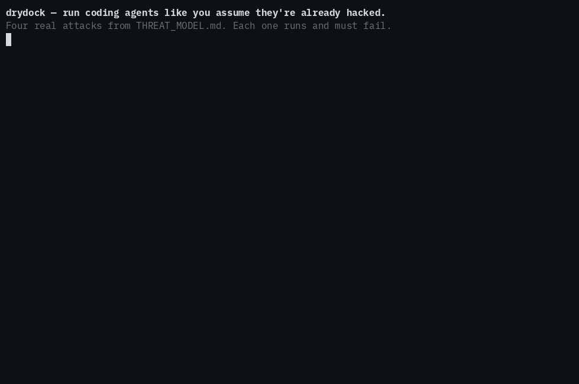

drydock runs Claude Code or OpenAI Codex full-throttle on your own repos, on your own Mac — no permission prompts, no babysitting. Each task runs sealed in a throwaway VM, so the agent can't touch your API key, can't reach the open internet, and can't write to anything but a disposable copy. The only thing that ever comes back is a git diff — and nothing reaches your real code until you approve it.
working alpha · v0.1.10 Single-maintainer, no third-party security audit yet — read the threat model and decide for yourself. Requires macOS 26+ on Apple silicon.

go test red-team case that runs the attack and asserts it fails — reproduce with make redteam, or watch all seven (incl. live VM isolation) via make demo VM=1. See the threat model →# install drydock, then one command sets up the rest brew install sricola/drydock/drydock drydock setup # installs container + squid, then init # set at least one vendor key — Claude Code and/or OpenAI Codex export ANTHROPIC_API_KEY=sk-ant-… # …or run on your Claude Pro/Max subscription, no key: # claude login && drydock auth claude (anthropic_auth: subscription) drydock start
Give drydock a repo and a task. It spins up a fresh, throwaway VM and drops the agent in with a copy of your code — and nothing else.
No API key, no access to your machine, no open internet. The agent works full-throttle inside the box, reaching only the package registries you allow.
It hands back a git diff. Read it, run drydock approve, and it lands — nothing reaches your real repo until you say so.
A containment that overclaims fails quietly, so here's the honest edge: drydock makes a malicious diff reviewable, not impossible — approve a subtle backdoor and it lands. It contains prompt injection rather than preventing it. And it trusts the Mac it runs on. The full threat model is the contract — read it before you trust it.